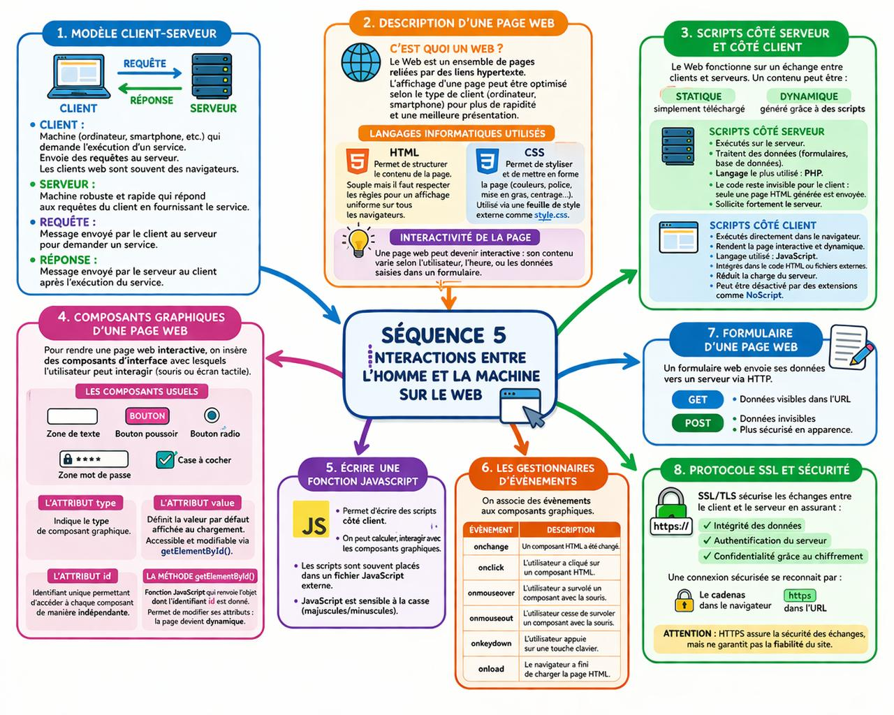

Le modèle client-serveur est une architecture de communication entre deux machines le plus souvent distinctes: le client et le serveur
Le Web est un ensemble de pages reliées par des liens hypertexte.
Laffichage d'une page web peut être optimisé (rapi-dité et présentation) selon les particularités du client (ordinateur, smartphone).
Il est possible de rendre une page web interactive, de telle sorte qu'il y ait de l'intéractivité entre l'utilisateur et la page web.
Son contenu pourra alors varier selon l'heure de la requête, le nom de l'utilisateur ou encore le remplissage d'un formulaire par l'utilisateur...
Le Web fonctionne sur un échange entre clients et serveurs : les serveurs fournissent les contenus, et les clients les récupèrent à distance. Un contenu peut être statique (simplement téléchargé) ou dynamique (généré grâce à des scripts exécutés côté serveur ou côté client).
Scripts côté serveur:
Les scripts côté serveur sont exécutés sur le serveur et permettent de traiter des données, comme celles envoyées via un formulaire ou stockées dans une base de données. Le langage le plus utilisé est PHP. Le code reste invisible pour le client, car seule une page HTML générée est envoyée au navigateur, ce qui sollicite fortement le serveur.
Scripts côté client:
Les scripts côté client sont exécutés directement dans le navigateur de l’utilisateur et servent à rendre les pages web interactives et dynamiques. Ils sont souvent écrits en JavaScript et intégrés dans le code HTML ou dans des fichiers externes. Cette exécution permet de réduire la charge du serveur, mais peut être désactivée via des extensions de navigateur comme NoScript.
Pour rendre une page web interactive, il faut y insérer des composants d'interface graphique avec lesquels l'utilisateur peut interagir, en agissant dessus avec le doigt (écran tactile) ou la souris (ordinateur).
Ces composants sont compatibles avec les navigateurs les plus utilisés.
Il existe un grand nombre de composants graphiques, voici les plus courants:
L'attribut type indique le texte de composant graphique
L'attribut value définit la valeur par défaut qui sera affichée dans l'élément au chargement de la page web. Cette valeur est accessible et modifiable, notamment grâce à la méthode getElementById()
Le côté dynamique de la page web est assuré par la possible modification des valeurs des attributs des composants graphiques. Pour pouvoir accéder indépendamment à chacun des composants, il faut pouvoir les identifier de manière unique : c'est le rôle de l'attribut id. Chaque composant peut posséder un identifiant unique, noté id, composé d'une chaîne de caractère.
La méthode getElementById (id) est l'une des fonctions les plus utiles du HTML car elle permet de renvoyer l'objet dont l'identifiant id est donné en paramètre de la fonction. Il est alors possible de modifier par un script les attributs de l'objet : la page devient dynamique.
Il est possible d'associer des évènements aux composants graphiques présentés précédemment
| Évènement | Description |
|---|---|
| onchange | Un composant HTML a été changé. |
| onclick | L'utilisateur a cliqué sur un composant HTML. |
| onmouseover | L'utilisateur a survolé un composant HTML avec la souris. |
| onmouseout | L'utilisateur cesse de survoler un composant HTML avec la souris. |
| onkeydown | L'utilisateur appuie sur une touche clavier. |
| onload | Le navigateur web a fini de charger la page HTML |
Un formulaire web envoie ses données vers un serveur via HTTP. GET affiche les données dans l’URL, tandis que POST les envoie de façon invisible et plus sécurisée en apparence.
Le protocole SSL/TLS sécurise les échanges entre client et serveur en assurant l’intégrité des données, l’authentification du serveur et la confidentialité grâce au chiffrement. Une connexion sécurisée se reconnaît par le cadenas dans le navigateur et l’utilisation de « https ». Cependant, cette sécurité ne garantit pas la fiabilité du site, car des sites frauduleux peuvent aussi utiliser HTTPS.
Voila un resumé:
